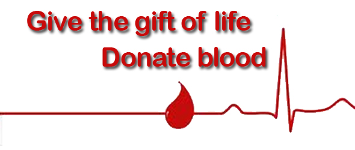

Blood is the most precious gift that anyone can give to another person - the gift of life. A decision to donate your blood can save a life, or even several if your blood is separated into its components - red cells, platelets and plasma - which can be used individually for patients with specific conditions.
|

|
Is donating blood safe?
Absolutely. Blood donation conditions are sanitary, and needles are sterile and disposable.
Who can give blood?
Almost anyone who is healthy, at least 16 years old, and weighs at least 110 pounds. (16-year-olds must weigh at least 130 lbs and need signed parental consent.) Learn more specifics at our Deferral Guidelines page.
How much blood is drawn? Is it safe for my body to lose that much blood?
One pint. The average person has 10-12 pints, so the small loss is easily afforded. The fluid (plasma) is replaced within 24 hours. The red cells take about five weeks. You can donate again in eight weeks!
More...
|